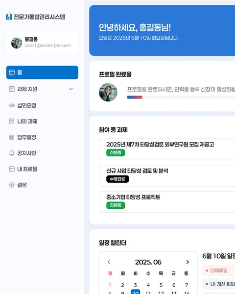

01
Enterprise Expert Workflow Platform
Workflow Design & Information Architecture
전문가 유형별 기능을 따로 설계하지 않고, 역할·상태·다음 행동을 기준으로 공통 UX 패턴을 정의한 B2B Workflow Platform입니다. 과제지원과 세 가지 전문가 신청 업무에 공통 정보 구조와 상태 기반 CTA를 적용했습니다.
Role. End-to-end UX/UI · Workflow Design · Dashboard UX · Status-based UX · Implementation Review
View Case Study →